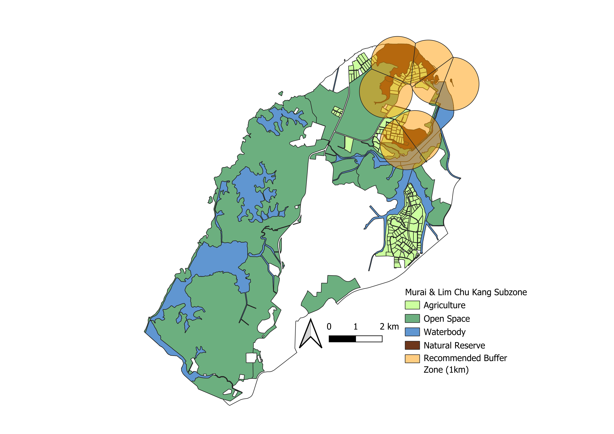
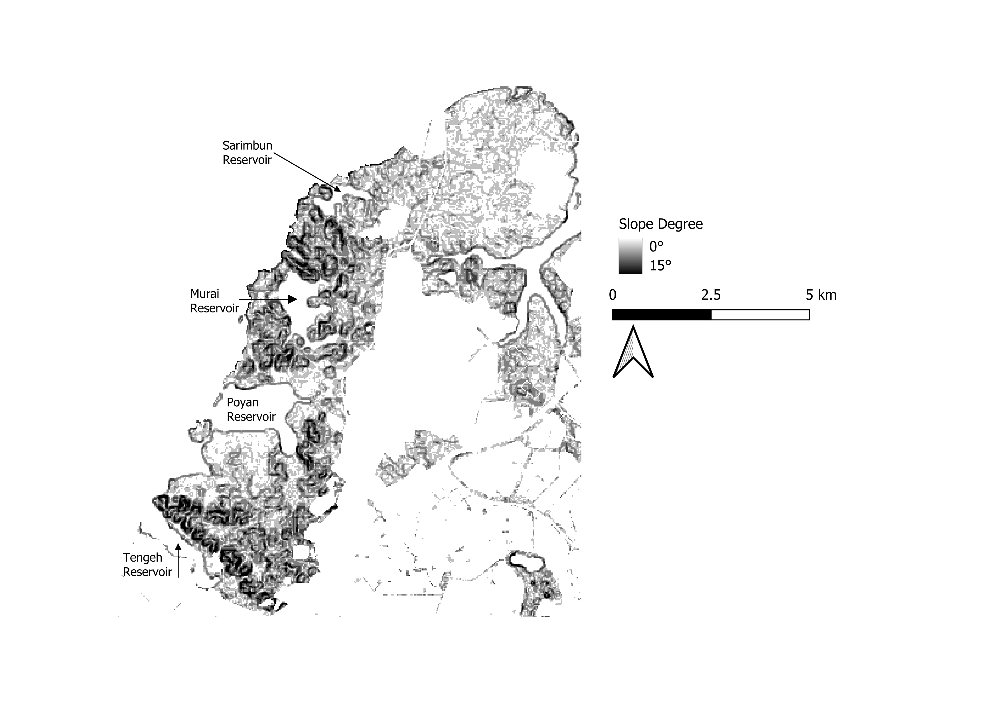
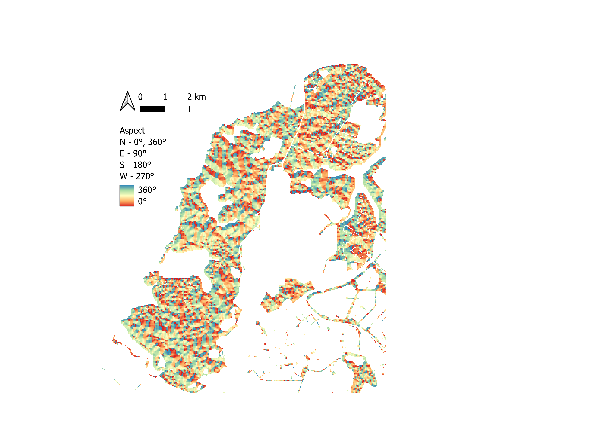
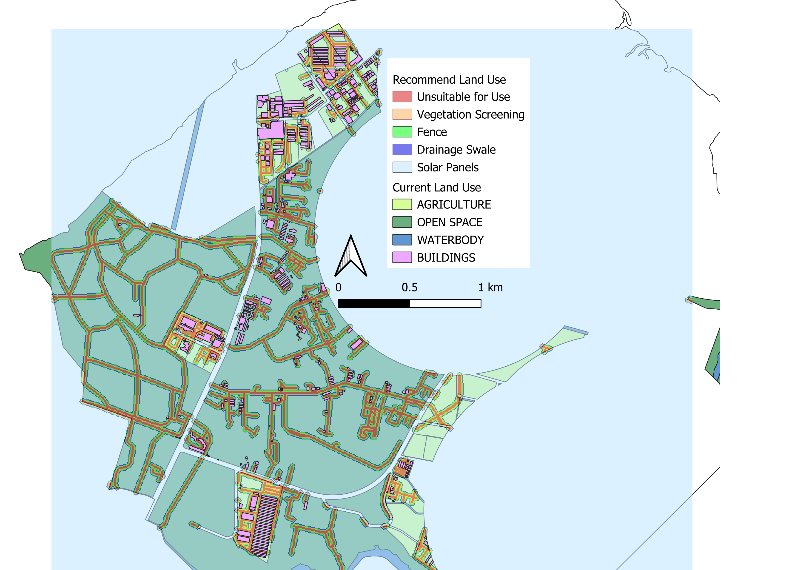
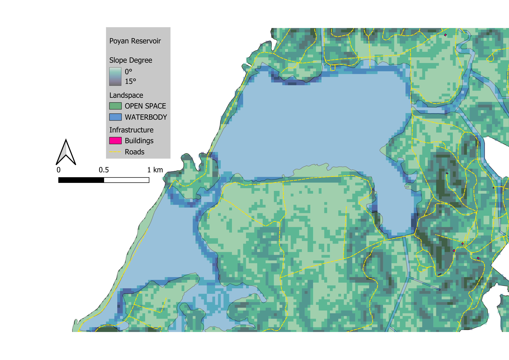
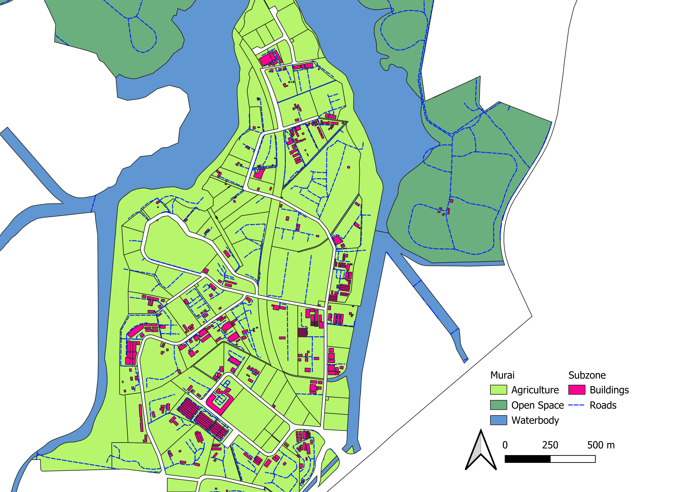

Determining Most Viable Area

We determined the most viable area as two main subzones: Murai and Lim Chu Kang. They possess one of the largest connected open spaces within Master Plan 2019, which would be hugely beneficial for maximising solar panel placement.
Solar farms can be harmful to the environment, as their construction process disturbs existing migration pathways and can cause soil erosion. As such, we will have a 1km radius buffer zone surrounding these nature reserves whereby the covered land space is deemed unsuitable.
Analysing Slope and Aspect
Solar farms benefit from being placed on flat terrain with minimal slope degree. As such, finding areas that already possess a low slope degree would be the most optimal, since there would be no need for terraforming.

As observed, Lim Chu Kang possesses extremely low slope degrees, making it particularly suitable for solar farm construction. Sarimbun and Murai Reservoir have relatively high slope degree, making them unappealing, whereas Poyan Reservoir’s immediate surrounding land has low slope degree, making it potentially optimal for PV farm construction.

For aspect data, since Singapore lies on the Northern Hemisphere it would technically benefit from southern topology slopes for placing solar panels due to the way the sun moves during the day. This makes the northern shoreline of Poyan Reservoir somewhat better at collecting sunlight. However, since Singapore is so close to the equator, this benefit is virtually negligible since the sun will be overhead during noon, and while other areas like Lim Chu Kang could be considered to be more ‘suboptimal’, this difference is not a glaring concern.
Lim Chu Kang

Even after we accommodate a 1km radius buffer zone for nature reserves in Lim Chu Kang, there is still a sizable amount of space left. This space is largely free, with some areas on the fringes being utilised for agricultural purposes. There is a decent amount of buildings in the area, which could be leveraged for auxiliary purposes in the solar farms (eg. offices, storing inverters, solar farm substations to connect to the main electrical grid).
From the positioning of the internal roads within Lim Chu Kang, we propose the following plan to maximise space for solar panel placement:
- The area 0-5m from the roads should not have any sort of infrastructure on them. This provides a sort of buffer space, reserved for placement of power lines, drainages, or just as emergency access for vehicles.
- 5-10m from the roads should be used for vegetation screening, whereby plants are placed on this area range for the express purpose of obstructing wind and dust from striking and potentially wearing away at the solar panels, whilst also maintaining the local aesthetic of the area. Since Singapore is called a ‘Garden City’, maintaining this image and reputation can only be beneficial.
- 10-15m from the roads is reserved for fencing, which should be a chain-link mesh around 2-2.5 meters in height to deter trespassers, and the fence should be 0.5-1 meter away from the vegetation screening for maintenance access.
- 15-20m from the roads, behind the fencing, is where drainage swales should be created. These drainages would help to manage and capture runoff from the solar panels, reducing the risk of water damage to the solar panels and damage due to soil erosion affecting the infrastructure’s structural integrity. This is especially important when considering that Singapore has two monsoon seasons.
As an additional bonus, there is worth in considering the concept of agrivoltaics, defined as the act of using the same land for both agriculture farming and solar panel placement. Typically, crops or livestock would be situated underneath or adjacent to the solar panels. Considering Singapore’s already limited and quickly shrinking available land space, being able to maximise the efficiency of every square meter of land is vital. Additionally, the presence of the solar panels also provides side benefits: the partial shading provided assists in lowering soil/air temperatures, and also protects the crops from harsh weather conditions.
It should be noted that agricultural projects have already been roadmapped within the Lim Chu Kang area in the past. For instance, in 2020, there were plans to transform Lim Chu Kang into a high-productivity agricultural food zone, as announced by the Singapore Food Agency (SFA), but this plan has since been delayed. This solar farm initiative could assist in reviving the feasibility of this plan, as their long-term sustainability goals align and complement each other.
Poyan Reservoir

Poyan Reservoir’s shorelines are of relatively low slope degrees, which makes them optimal for placing supporting infrastructure like inverters or housing substations, with room for more land intensive structures like battery storage arrays, whilst the solar panels themselves can be installed onto a floating platform covering Poyan Reservoir. There is relatively little existing building infrastructure, so that would be one of the shortcomings that has to be addressed if there are any plans to build a solar farm in this area. However, due to the good connectivity of this place, as supported by the placement of road infrastructure, this would make the construction process easier as materials can still be transported without much difficulty.
A potential concern we had was that since Poyan Reservoir technically fell within the boundary area of the Singapore Armed Forces (being within the SAFTI Live Firing Area), that would make installation of a solar farm impossible. However, Tengeh Reservoir also falls within the SAFTI Live Firing Area, and since a solar farm already exists there, we came to the conclusion that there was still potential for Poyan Reservoir to host a solar farm of its own.
Due to the fact that the idea is to have a floating solar farm here, there would be less of a need for drainage swales. Vegetation screening can be considered, but since this area’s road infrastructure is far less concentrated as compared to Lim Chu Kang, its effectiveness may not be worth the cost. Fences can also be set up if so desired, but since the area is on military land the risk of trespassers is far lower.
Seeing that photovoltaic farms require minimal maintenance, and individual panels are rated to last several decades before replacement, the impact of maintenance on a potential solar farm in this military-cordoned area should not be much of a concern.
Murai Subzone

Another area we considered is this corner of the Murai Subzone. Particularly, we extracted out the land use patterns for this to highlight the potential of this plot of land for agrivoltaic usage (dual-use land for agriculture and solar farm). As can be observed from this visualisation, a majority of the land here is allocated for agriculture. However, this agricultural land is far from contiguously spaced, with many buildings and roads interspersed within. This follows the same land usage distribution for the Lim Chu Kang agrivoltaic potential zone, and as such, our recommendations for a potential agrivoltaic solar farm for this area should follow the same recommended guidelines as specified for Lim Chu Kang.
Solar Farm Estimations and Calculations From the solar irradiation data, the numbers we obtained are:
| Parameter | Value |
|---|---|
| Total Irradiation in 2020 (kWh/m²) | 1680 |
| Average Solar Panel Efficiency (%) | 20 |
| DC to AC Conversion Factor | 1.29 |
Solar panel efficiency was derived from Google searches.
Since solar panels generate DC electricity, and appliances use AC, we calculate the conversion by referring to Chapter 6.1 in SES 2024: * P = average of “inst_cap_mwp” * AC = average of “inst_cap_mwac” * Conversion Factor = P / AC
Calculate the total power output per m2 annually to be 0.2 * 1680 = 336 kWh DC.
Converting the output into AC, 336 / 1.29 = 260.4 kWh AC.
Hence, 1m2 of solar panel coverage can provide 260.4 kWh AC of power annually.
Before merging these numbers with the total area within our target regions, we need to keep in mind that it is not possible to achieve 100% solar panel coverage for any piece of land.
- About 40-60% of open land is usable for solar panel deployment. We decided to take a conservative estimate of 45%.
- An aquatic solar farm exists at Tengeh reservoir. About 35% of the reservoir is used for that. We decided to follow it.
- On average, the coverage of solar farms in agrivoltaics farms is around 10-50%. We decided to take the average of that.
| Lim Chu Kang (Open Space) | Reservoirs (Floating) | Murai (Agrivoltaics) | |
|---|---|---|---|
| Total Area (m²) | 4 691 840 | 7 774 950 | 5 046 540 |
| Total Annual AC (kWh) | 1 221 877 136 | 2 024 280 780 | 1 314 133 416 |
| Solar Panel Coverage (%) | 45 | 35 | 30 |
| Overall Annual AC Provided (kWh) | 549 844 711.2 | 708 498 273.0 | 394 240 024.8 |
From the results, we determined that Lim Chu Kang and the reservoirs would boast the greatest cost-benefit ratio for energy production.. * Leveraging open, mostly unallocated space is the most feasible avenue to deploy scalable solar farms. Additionally, it does not compete with the scarce land that Murai has. * As mentioned above, a solar farm already exists at Tengeh reservoir, which is an excellent proof of concept. By following its implementations and improving upon them, deploying solar farms in surrounding reservoirs has a high likelihood of success.